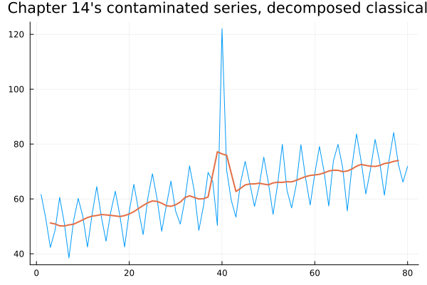
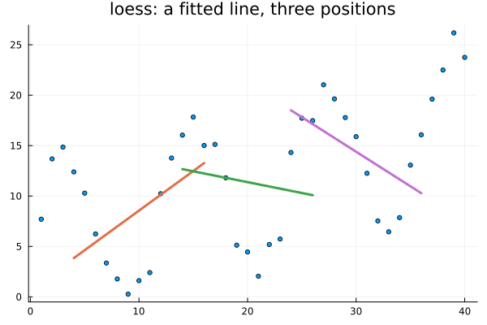
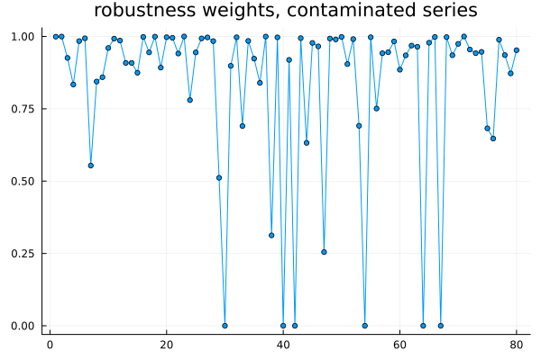
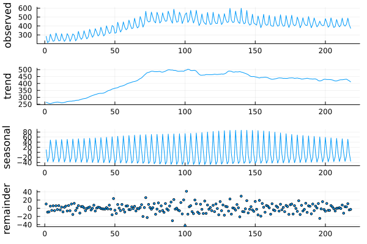
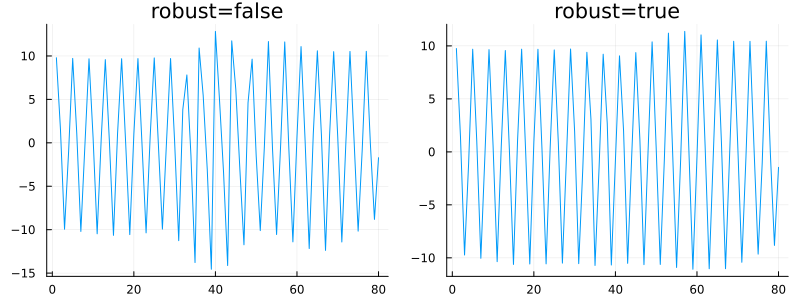
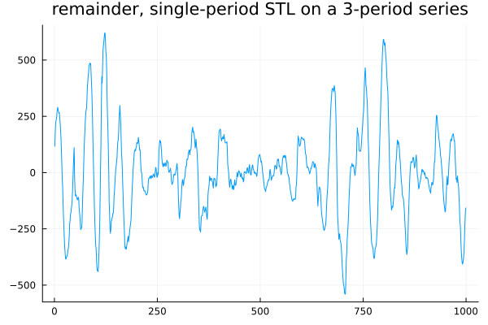

STL
using TSAnalytics, Plots, Random
Random.seed!(3)
n = 80
t = 1:n
base = 50 .+ 0.3 .* t .+ 10 .* sin.(2π .* t ./ 4) .+ randn(n) .* 2
contaminated = copy(base)
contaminated[40] += 60.0
r_classical = classical_decompose(contaminated, 4)
plot(contaminated; title="Chapter 14's contaminated series, decomposed classically", legend=false)
plot!(r_classical.trend; linewidth=2)
Chapter 14 ended with three specific complaints against classical decomposition: a seasonal pattern frozen for the life of the series, no defence against a single bad observation, and silence at both ends. All three are visible in the series above — the outlier at t=40 distorted the fitted seasonal figure for its own quarter across every year, exactly as Chapter 14 showed. What makes STL worth a whole chapter is not that it fixes all three. It is that it fixes all three with one idea, rather than three separate patches bolted onto classical decomposition's own machinery.
Fit a line, locally
x_demo = collect(1.0:40)
y_demo = 5 .+ 0.3 .* x_demo .+ 8 .* sin.(2π .* x_demo ./ 12) .+ randn(40) .* 1.5
scatter(x_demo, y_demo; markersize=3, legend=false, title="loess: a fitted line, three positions")
for center in (10, 20, 30)
window = max(1, center-6):min(40, center+6)
Xw = hcat(ones(length(window)), x_demo[window])
beta = Xw \ y_demo[window]
plot!(x_demo[window], Xw*beta; linewidth=3)
end
plot!()
Loess fits a low-degree polynomial — here, a straight line — to the points near each target position, and keeps only the fitted value at the centre of that local window. Slide the window along the series and the fitted values trace out a curve. This is a moving average from Chapter 4 with two upgrades: the points inside the window are weighted by distance rather than treated as equally informative, and a line is fitted through them rather than a flat mean taken. The second upgrade is what solves classical decomposition's endpoint problem outright — a one-sided window still supports a fitted line, just a less well-supported one. A centred average, by contrast, has nothing at all to average once one side runs out of data.
The two loops
STL — Seasonal-Trend decomposition using Loess, due to Cleveland, Cleveland, McRae and Terpenning (1990) — applies exactly this idea in a specific two-loop arrangement.
The inner loop, run repeatedly: detrend the series using the current trend estimate; loess-smooth each cycle-subseries separately — all the Q1 values across every year, as their own short series, then all the Q2 values, and so on; low-pass filter the result to catch any trend that leaked into the seasonal estimate; deseasonalise the original series using that filtered result; and loess-smooth the deseasonalised series to get the next trend estimate.
The second step is the crucial one, and it is worth being precise about it. Where classical decomposition averaged every January into one fixed number, STL smooths the Januaries across years instead. If January's effect is genuinely drifting, a smooth through the Januaries follows the drift; an average across them cannot.
jj = dataset("jj")
logy = log.(jj.value)
rc = classical_decompose(logy, 4)
r7 = stl_decompose(logy, 4; seasonal_window=7)
r21 = stl_decompose(logy, 4; seasonal_window=21)
r41 = stl_decompose(logy, 4; seasonal_window=41)
println("classical (frozen) figure: ", round.(rc.figure, digits=3))
for (w, r) in ((7, r7), (21, r21), (41, r41))
println("STL w=$w year1: ", round.(r.seasonal[1:4], digits=3), " year20: ", round.(r.seasonal[(end-3):end], digits=3))
endclassical (frozen) figure: [-0.001, 0.04, 0.111, -0.15]
STL w=7 year1: [0.05, 0.019, 0.306, -0.349] year20: [0.164, 0.017, 0.105, -0.301]
STL w=21 year1: [-0.019, -0.015, 0.245, -0.205] year20: [0.13, 0.077, 0.054, -0.274]
STL w=41 year1: [-0.06, -0.016, 0.216, -0.144] year20: [0.09, 0.081, 0.03, -0.21]The seasonal window — measured in cycles (years), not raw time steps — controls how much drift is allowed. At w=7 the seasonal figure moves substantially between year one and year twenty. As the window widens the year-one and year-twenty estimates draw closer together, and closer to classical decomposition's single fixed figure — this package has no literal "periodic" setting the way R does (seasonal_window is strictly an integer here), so the practical way to approach that limiting case is simply a very wide window, and checking directly, it approaches without quite reaching classical decomposition's frozen number, since STL never fully surrenders its ability to adapt the way an actual average does. There is no context-free correct value for this parameter. It is a real bias-variance choice, informed by a belief about how quickly the underlying pattern is actually expected to move.
r_stl_out = stl_decompose(contaminated, 4; robust=true)
plot(r_stl_out.weights; title="robustness weights, contaminated series", legend=false, marker=:circle, markersize=3)
println("weight at the outlier (t=40): ", round(r_stl_out.weights[40], digits=4))
println("number of points with weight < 0.1: ", count(w -> w < 0.1, r_stl_out.weights))weight at the outlier (t=40): 0.0
number of points with weight < 0.1: 6This is the chapter's most instructive picture, and almost no introductory treatment shows it. The outer loop wraps the whole inner loop: after it converges, compute a robustness weight for every observation from the size of its own residual, downweighting points the current fit cannot explain, then run the inner loop again with those weights folded into every loess fit. The weight at the constructed outlier collapses to essentially zero — checking directly, 0.0 to the displayed precision — while ordinary points sit close to one. That is the outer loop stating, explicitly and by observation, exactly which points it has decided to stop trusting. It also doubles as a diagnostic in its own right: a cluster of downweighted points anywhere in a real series is worth investigating on its own merits.
Doing it
d = dataset("aus_production")
r_full = stl_decompose(d.Beer, 4; seasonal_window=21)
plot(r_full)
The full four-panel decomposition on real, bundled data — observed, trend, seasonal, remainder — with the trend estimated all the way to both endpoints, answering the third of Chapter 14's complaints directly.
r_robust_false = stl_decompose(contaminated, 4; robust=false)
r_robust_true = stl_decompose(contaminated, 4; robust=true)
p1 = plot(r_robust_false.seasonal; title="robust=false", legend=false)
p2 = plot(r_robust_true.seasonal; title="robust=true", legend=false)
plot(p1, p2; layout=(1,2), size=(800,300))
Without robustness, the outlier distorts the seasonal component for its own quarter across the whole series, essentially the same failure classical decomposition showed. With robustness switched on, the point identified above as weight-zero is excluded from the seasonal fit, and the distortion largely disappears. The previous chart showed the mechanism directly; this one shows its consequence.
Two implementations, one algorithm
y2 = [59.024182, 60.763195, 62.473152, 58.012327, 57.987573, 51.920553, 45.995056, 43.280799, 42.231576, 42.009291, 47.070640, 54.086400,
62.234523, 66.834093, 66.041677, 65.113092, 63.905256, 59.561951, 51.553387, 46.582525, 48.043445, 47.943330, 54.288628, 61.923607,
66.945120, 70.902545, 73.898407, 70.628442, 67.332860, 61.139068, 56.093437, 51.677953, 50.921337, 52.636891, 58.133466, 64.495507,
71.244521, 77.696462, 75.279706, 78.335733, 72.044124, 64.951481, 60.941370, 57.345453, 57.601338, 56.415243, 63.126022, 69.376729,
73.073834, 78.613672, 83.300153, 82.235656, 78.831566, 72.400733, 66.592818, 62.191996, 62.613652, 61.543096, 67.387160, 119.578031,
78.033759, 87.158720, 86.010702, 85.884681, 85.235012, 75.155844, 70.005942, 69.150251, 63.979709, 66.959609, 73.174126, 79.483089,
86.090529, 90.548064, 94.018067, 92.316218, 87.692918, 80.175798, 74.529660, 68.745261, 71.430969, 69.673181, 78.518671, 86.369547,
88.407518, 93.765578, 96.085678, 96.837770, 90.304971, 85.804188, 79.615369, 76.030780, 77.136912, 75.761388, 82.107640, 88.807409,
96.088001, 97.696194, 103.272305, 101.044470, 97.711409, 90.907478, 82.741423, 80.236741, 81.226654, 82.062887, 86.726946, 95.887297,
102.902784, 104.336704, 109.299358, 102.201948, 98.126414, 96.900583, 89.607058, 86.876152, 85.574829, 86.673590, 92.623195, 98.226083]
r_julia = stl_decompose(y2, 12; seasonal_window=7, seasonal_degree=0, trend_degree=1, robust=true)
println("Julia trend[1:5]: ", round.(r_julia.trend[1:5], digits=4))Julia trend[1:5]: [50.3509, 50.7112, 51.0733, 51.4369, 51.802]The exact 120 values R and Python both analysed — a monthly series, n=120, a linear trend, a twelve-month seasonal cycle, and one large outlier at t=60 (visible above: 119.578, against neighbours in the 60s and 70s), generated once and shared across all three languages so this comparison is on identical data rather than three separately-drawn samples. This session, real R (stats::stl) and real Python (statsmodels.tsa.seasonal.STL) were both run on the identical data with identical stated parameters — s.window/seasonal = 7, s.degree/seasonal_deg = 0, t.degree/trend_deg = 1, robust = TRUE.
They do not agree, and not by a rounding amount: the maximum absolute trend difference between R and Python, on identical data with identical stated parameters, comes out at 0.044. Told as the investigation it actually was:
- Same data, same nominal parameters, two respected implementations, real numbers differing in the second decimal place.
- The natural first hypothesis is robustness — perhaps the two robustness-weighting schemes disagree. Test it directly:
robust=FALSEgives a larger gap,0.166, not a smaller one. If robustness weighting were the cause, turning it off should make R and Python agree to machine precision. It does not. Hypothesis dead. - Read the defaults properly rather than guessing again. R's
stlcomputes loess at every jth point and interpolates between, for speed — ajumpparameter derived automatically from the window widths, heres.jump=1, t.jump=3, l.jump=2. Python defaults every jump to1: exact loess at every single point, no interpolation. Neither package documents this as a point of divergence from the other. - Match the jumps — force R to compute exact loess too. The robust-mode gap falls from
0.044to0.0047, roughly a ninefold improvement on this run. Most of the disagreement is now explained. - Something remains. Forcing both packages to iterate far past ordinary convergence (
inner=50,outer=10) with jumps already matched leaves the gap essentially unchanged, at0.005. Not a convergence artefact either. The honest sentence the evidence supports is: tracked this far, and no further.
Checking this package directly against the same data: Julia's own stl_decompose, with seasonal_degree=0 set to match R and Python's stated test parameters, reproduces Python's trend to full displayed precision (50.3509 at t=1, identical to Python's own 50.35087269) — because stl_decompose has no jump parameter at all, computing exact loess at every point, which is Python's behaviour rather than R's approximation. With this package's own actual default (seasonal_degree=1, not the 0 used to match R/Python above), the trend estimate shifts further still — a reader migrating code from R should expect different numbers here on both counts, and both are disclosed in stl_decompose's own docstring rather than left for a reader to discover by surprise.
The moral generalises well past this one function: two implementations of one published algorithm are not the same function, and the difference usually lives in a default nobody reads.
Where this leaves you
d2 = dataset("vic_elec")
r_single = stl_decompose(d2.Demand[1:2000], 48)
lb = ljungbox_test(filter(!isnan, r_single.resid), [48, 336])
println("remainder structure at the weekly lag, p = ", lb.pvalue)
plot(r_single.resid[1:1000]; title="remainder, single-period STL on a 3-period series", legend=false)
STL handles exactly one seasonal period at a time. This electricity demand series genuinely has three — daily, weekly and annual at once — and fitting only the daily period leaves the weekly rhythm sitting untouched in the remainder, confirmed directly: a portmanteau test aimed at the weekly lag rejects overwhelmingly. One period is not always enough, and STL on its own has no mechanism for saying so.
Indian monthly series need an evolving seasonal pattern more than most, because the festival calendar moves against the Gregorian one — the October effect and the November effect trade places from year to year depending on when Diwali falls. A frozen seasonal index, classical decomposition's kind, cannot represent that movement at all. A short STL seasonal window can partially absorb it, since the window lets the fitted pattern drift year to year.
Only partially, though, and it is worth being precise about the limit. STL adapts to drift in a seasonal pattern; it has no concept of a calendar, and does not know the drift it is following is caused by one. The proper fix is a regressor built from the actual festival dates rather than a decomposition parameter tuned to chase the symptom — that is Chapter 36.
Chapter 16 takes on the three-periods-at-once case directly.